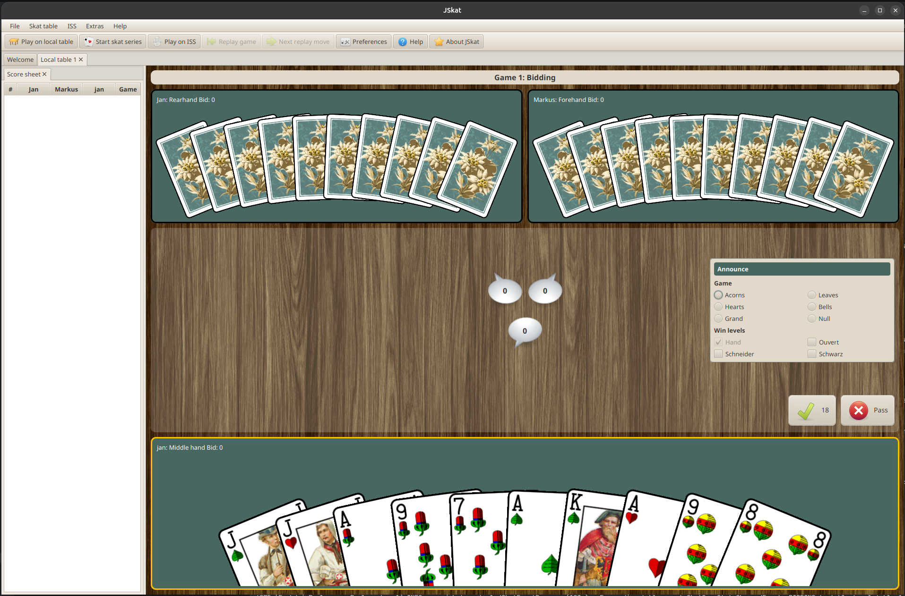
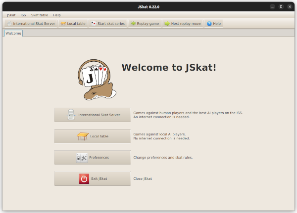
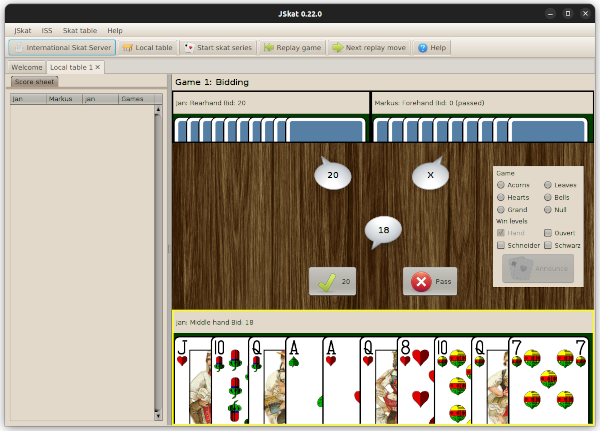
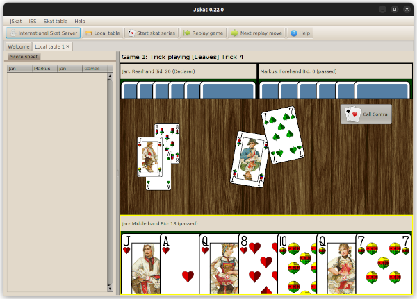
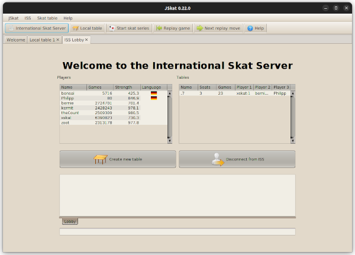

Version 0.24 bringt die überarbeitete Oberfläche und die gesamte Reizsituation in eine klare Ansicht.

Starten Sie eine lokale Serie gegen KI-Spieler oder verbinden Sie sich mit dem Internationalen Skat-Server.

Verfolgen Sie jedes Gebot und entscheiden Sie, wann Sie halten, weiterreizen oder passen.

Behalten Sie Tisch, Karten, Punktestand und Spieldetails während jedes Stichs im Blick.

Die ISS-Lobby zeigt angemeldete Spieler und die Tische, an denen gerade gespielt wird.